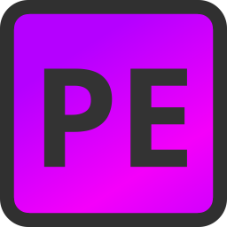

Introduction
Hi,
My name is Justus, I'm 25 years old and I live in beautiful Emden in East Frisia. I've been a tech enthusiast since childhood.
4 years ago I started my Python adventure and ever since, I have been building automation software, smaller games, GUI applications, websites and more.
Originally intended as a pastime, this turned out to be one of my greatest strengths.
Over 10 years of scripting experience in Batch as well as VisualBasicScript.
Also over 10 years of experience with HTML and CSS, 3+ years in JavaScript.
Passionate Artist
Whether drawings, image editing, animations or design, when I can, I let my creativity run free.
I draw icons, small illustrations and more.
You can find the portfolio for this here.
This skill is used to create:
- Icons, BitMap-Fonts, Layout-Design & more for GUI applications.
- Illustrations for videos, music thumbnails and more.
- Presentations for projects.
Small-Scale Musician & Audio Enthusiast
I really enjoy composing songs. Editing audio has become more and more of a habit over time, allowing me to acquire a lot of knowledge.
Video-editing
Many years of relevant experience in video cutting & video automation, for YouTube Videos, Software-Presentations and more
Projects
PyNodle - A Pygame Node-Editor(For Game Development)
-
Developing a high-performance and modular visual Node Editor using Pygame, focusing on refactoring the core architecture to establish a robust and extensible foundation.
-
Architecture & UX: Implementing a specialized system for custom UI elements, including a centralized InputManager with a blocking mechanism to prevent overlapping input events and ensure a professional user experience.
-
Comprehensive UI Library: Building a full set of interactive components, such as Nodes (with drag/drop), Buttons, SpinBoxes, Color Pickers, and complex Text Inputs, all designed for seamless integration and visual feedback.
Nov. 2025 - present

Justus Decker GitHub-Page
-
Utilized the platform to effectively showcase diverse technical projects, providing clear overviews of skills in backend development, UI/UX, and various programming languages.
-
Emphasized attention to design detail by first creating wireframes on paper and translating the concept into a custom, modern web layout.
-
Designed and developed a personal portfolio website from scratch using clean HTML, CSS and Javascript, ensuring a responsive user experience.
Dec. 2025

Automation-Manager
-
Developed a Flask-based Application Manager for job applications, providing a centralized system to manage job listings, application data, and statistics.
-
Implemented functionality to import jobs directly from LinkedIn via HTML parsing and enabled easy creation and management of custom job titles/professions and application records.
-
Features include a built-in CV creator that utilizes a Python class structure for data storage, allowing users to generate and export customized CVs as PDF files.
Nov. 2025 - Dec. 2025
pigUI / jmpUI
-
Engineered a hierarchical UI Management system (UIManager) to control element layering, rendering order, and ensure input blocking focused only on active elements (e.g., dragged nodes, text inputs).
-
Abstracted raw Pygame events (mouse, keyboard) into a clean Events class to provide intuitive and simplified event handling (including double-clicks, wheel scroll, and key repeats).
-
Developed a suite of specialized, complex UI widgets, including UITextInput (featuring key repeat and validation), UIDropDown, UIMenuBar, and an UIColorPicker.
-
Enabled customizable aesthetics by strictly separating UI logic (UIElement) from visual representation (UXElement/UXWrapper), allowing for easy theme changes and custom component rendering.
Nov. 2025 - Dec. 2025
Nokiator
-
Developed a specialized, FFmpeg-based Windows Batch script for the accurate and reliable conversion of MP3 audio files.
-
Optimized audio output to a Constant Bit Rate (CBR) of 128 kbps, specifically ensuring guaranteed compatibility and reliable playback on legacy hardware (e.g., Nokia RM 1190).
-
Designed flexible utility supporting dual operating modes for batch folder processing or single-file conversion (using -f and -s flags).
-
Implemented external control of encoding parameters via the %ENCODER_FLAGS% environment variable, enhancing script flexibility and maintainability.
Nov. 2025
MPLP
-
Developed a specialized, lightweight Python media player tailored for live streaming and Let's Plays, ensuring non-blocking, resource-efficient audio playback in live production environments.
-
Integrated an HTML export function (export.html) to facilitate seamless song title display and overlay for use with third-party streaming software (e.g., OBS Studio).
-
Designed an intuitive GUI (Tkinter) for comprehensive playlist management, supporting adding files/folders, saving/loading playlists using the JSON format, and featuring standard controls (Shuffle, Skip, Volume).
-
Utilized a dedicated threading model with native Python libraries (Tkinter, Pygame Mixer) to ensure stable and uninterrupted playback crucial for time-sensitive broadcasting.
Oct. 2025

pycode-info
-
Developed a tool to generate comprehensive language statistics, summarizing project usage by tracking file counts, total size, and lines of code per language, presented with a visual usage bar.
-
Implemented a Cyclomatic Complexity Viewer that analyzes Python files to measure function complexity, utilizing a heatmap visualization to highlight potential maintenance hotspots.
-
Integrated Flake8 linter functionality to execute automated static analysis on Python files, summarizing all generated errors and warnings into a clear, readable report format for quality assurance.
Sep. 2025
LPRT
-
Built a desktop-application tool for Let's Players to automate the recording, editing, and management of video content, streamlining workflows through CSV/JSON data handling.
-
Developed automation features including thumbnail generation, audio normalization and video/audio merging—boosting editing efficiency.
Sep. 2023 - Sep. 2025
My Website
-
Developed a personal web presence utilizing HTML, CSS, and WordPress.
-
Due to the limitations of WordPress: No iFrames, No real HTML, Awful Software, Slow Loading Times, Bad Support and more, i stopped working on this project.
Feb. 2025 - Mar. 2025
pygame-engine
-
Developed a lightweight Pygame engine designed to simplify the integration and management of UI elements and 2D/3D functionalities.
-
Focused on creating an intuitive and accessible framework to streamline development for various interactive applications.
-
This project was discontinued due to technical challenges encountered during development.
Apr. 2025 - May. 2025
WIN - A Hackathon Project
-
Built a lightweight word count guessing game using Wikipedia content fetched by my own API, offering a simple yet engaging point-based challenge.
-
Designed engaging gameplay mechanics, providing users with three attempts and multiple-choice options per round.
-
This project was discontinued due to technical challenges encountered during development.
Feb. 2025 - Mar. 2025
Education
Masterschool
-
Acquires hands-on experience through an immersive program, developing backend applications using Python & SQL.
-
Applies software engineering principles such as object-oriented programming (OOP), test-driven development (TDD), and version control (Git, GitHub) in real-world projects.
-
Builds and deployes scalable applications using HTML, CSS. JavaScript & the Flask Framework.
Feb. 2025 - present
Backend Developer
Training Program
Experience
Multiple Companys
-
Operated forklifts to move and organize over 1,500 pallets per week, ensuring efficient warehouse flow and reducing loading times by 35%.
-
Maintained a 100% safety record while handling high-volume shipments and conducting daily equipment checks to prevent downtime and accidents.
Mar. 2021 - Sep. 2024
Forklift Operator

Multiple Companys
-
Assisted in receiving, sorting, and storing 2,000+ items weekly, ensuring accurate inventory and smooth daily operations.
-
Supported order picking and packing, helping reduce shipping errors by 20% through attention to detail and teamwork.
Feb. 2018 - Mar. 2021
Warehouse Helper
Interests
Work in progress